How to Manually Simulate (Seasonal) Time Series in R
Looping through AR up through to SARIMAX series
Simulations
Methodology
R
Time Series
Author
Peter Licari
Published
September 5, 2025
Introduction: Time Keeps on Slippin’
I do a lot with time series forecasting for my day-job. Coming from a methodological background emphasizing single-shot studies (cross-sectional analyses, experiments taking place in single moments, etc), it’s been a lot of fun stretching my mind to incorporate the modes of thinking associated with predicting things across time. I never formally took a class on time-series methods in grad school, though I did pick up enough to fumble my way around autocorrelation and Granger Causality in a way that (I hope) isn’t too egregiously wrong.1
One of my favorite things at work is tinker with processes that don’t necessarily have a definitive, universally regarded solution—like variable selection, scenario forecasting, TS bootstrapping, etc—to see what sorts of improvements I can make. Solutions abound for these topics depending on your industry and application, but, it turns out, massive theme park resorts are complicated beasts. And their complexity (and rareity, in absolute numbers) means that a lot of techniques that are excellent in some contexts are so-so in the ones I’m focusing on. So I wind up doing a fair bit of simulation—both to test my bricolages and also ensure that I have a firm enough grasp of the underlying processes to proffer a novel method at all.2
One way that this complexity plays out is in the structure of the time series. Many amusement experiences exhibit strong seasonality in many of the things they care about most. Anyone involved with tourism will know that there’s typically an “on” season and an “off” season—though when, specifically, these “seasons” occur strongly depends on what your specific business is. On top of that, there are usually additional outside factors—like promotions and (social) media coverage—that have more immediate influences on these metrics.
There are well-established methods for measuring and forecasting time series like these, but there’s a paucity of resources on how to simulate them yourself. Sure, there are functions and packages that’ll do it for you3—and ChatGPT4 could whip something up while glazing you for “💪 pushing the boundaries of human knowledge 🤯🧠”—but I’m going assume that, if you’re reading this, you at least have some interest in doing this with your own hands and brain.
This post is a resource for you, fellow tinkerers. In it, I’ll show how to simulate SARIMAX models, starting from simple AR models and moving our way up. I’ll do it in R, but it should be pretty easy to translate these into something like python using {numpy} and {statsmodels}. Each heading will correspond to a different kind of model, going in the following sequence:
AR
MA
ARMA
ARIMA
ARIMAX
SAR
SARMA
SARIMA
SARIMAX
Within each, I’m going to have a section going through the intuition, then the code, and then some “proof” using the R package {forecast} to show that what we’re janking together in the code actually translates to what we expect in the model outputs.
What about SMA?
You may be wondering why I’m not doing a seasonal moving-average (SMA) model. It’s because it’s very easy to deduce how to do from the combination of the MA, SAR, and SARMA models. This post has already ate up a lot of weekend hours and I’d like to be done with it at some point.
If you’re just here to copy-paste code5, you can click on the links to go to the needed section. But the intuition is intended to be built-up over all of them so you might find yourself learning more by at least skimming the preceding sections. Or, you know, do what you want. I’m a nerd on the internet, not a cop.
If you’re interested in simulating more than one period back, read this.
I may not be a cop but, fair warning, if you’re curious about how to simulate periods greater than 1, I’m only going to do this for the AR and SAR models. The idea being that you’re simply going to repeat whatever the simulation is showing you for the other models. Otherwise, this post would be interminably long for folks who are actually reading it all the way through. Or folks who are writing it all the way through. The latter of which, most likely, outnumber the former.
A bit of necessary background.
This post is going to assume that you have at least some familiarity with time series terminology. At the very least, it’ll make it easier to put all of the pieces together. But I do want to make sure that we’re at least explicit on the symbols and such that we’ll be using in this post.
When discussing the structure of time series data, you’ll often see the letters p,d, and q floating around. These translate to:
p: The number of lags (the auto-regressive component).
d: The differencing (how many times the series is “integrated” or how many times it has to be differenced to become stationary).
q: The order of the moving-average component (how far back forecasting errors predict your current value).
Ok, “d” for “difference” makes sense, but where the heck does p and q come from? No idea! All the stuff I can dig up just says this is how it’s “traditionally” or “usually” denoted. Your guess is as good as mine.
If the mapping of consonants to concepts isn’t confusing enough for the “simple” case, it’s made all the better with the symbols denoting structure of the seasonal component. P, D, Q, and (frequently, but not exclusively) s.6 The upper-case letters mean the same as their lower-case counterparts except translated to the number/order of seasons back that the operations apply to, with s denoting how many periods/instances define a season. In any case, I’ll use these to denote the coefficients of the terms for their respective elements.
Alright! With background out of the way, let’s look at simulating some time series!
AR Models
Intuition
The intuition behind AR models is that previous values of your dependent/target variable are going to influence your current value. The number associated with p here is going to be how many previous values back this dependency lasts. p(1) means that only the immediately prior value predicts the current one, p(2) means that the previous 2 values predict the current one, etc. Formally, it will be:
Where Y_t is the current value of the target, \mu is the series mean (optional), Y_{t-1} is the value that Y took last round (generalized out k periods back), p is a coefficient denoting how much of an impact the previous value has on the current one, and \epsilon is the measurement error.
Simulation
AR(1) model.
Let’s start with the AR(1) model. We’ll set the time series coefficient to 0.3 and the mean to be 500. We’ll set a series of 10,000 observations (something that I would kill to have at work7). What this will effectively be is a loop where I record all of series values and multiply the one that came immediately before by my coefficient. I’ll then add this (along with some error) to my prevailing mean and, wham-bam, you’ve got yourself an AR(1) model.
Assigning all of the parameters for our model: p_1 = 0.3; \mu = 500; \epsilon \sim \mathcal{N}(0, 100)
2
Instantiating the vector of Y values
3
Making a loop the length of our series
4
For the first Y value, it will just be \mu + \epsilon (the \mu will come at the end!)
5
Adding the product of the previous Y value term (y_vec[i-1]) and the AR coefficient (p_1) to the error.
6
Adding \mu to re-center the series at the desired value of 500.
What does our series look like?
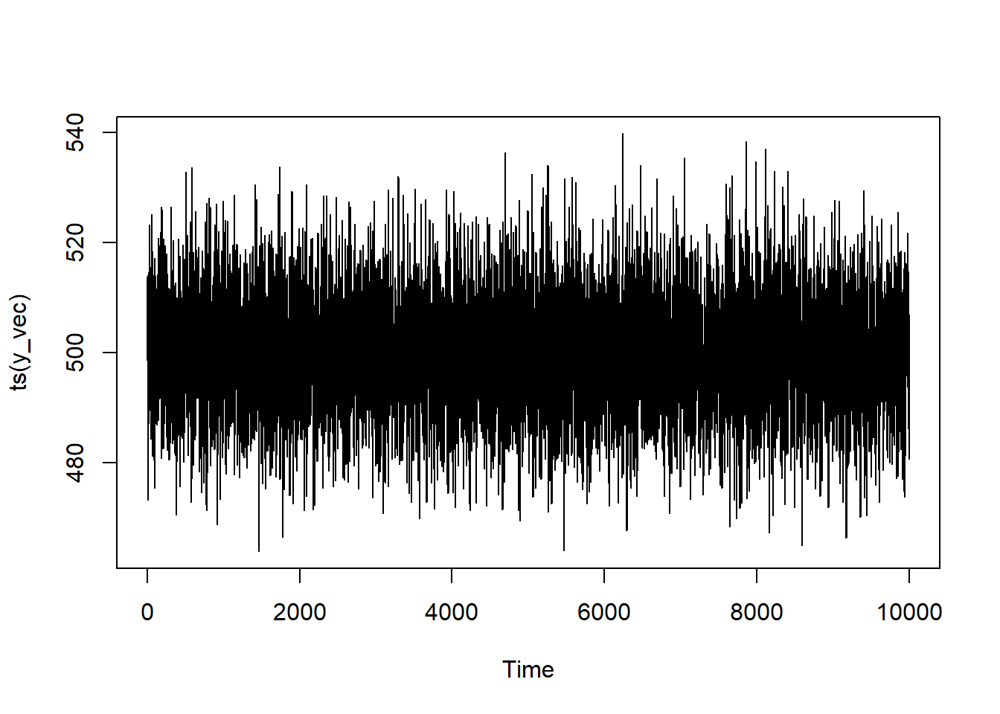
You see that it bounces around quite a lot, but it’s not a pure white-noise process since there’s dependence on the previous value.
AR(2) Model
To generalize to the AR(2) model, we’re going to adapt the code to be based upon lags from 2 series ago. We’ll have the influence decay such that the second term only matters about 1/3rd as much as the first one. (Actually, I’ve tried to set up this code to generalize pretty easily to an arbitrary number of periods, not just 2. You’ll just have to add more values to the p_coef vector/array.)
Assigning all of the parameters for our model: p_1 = 0.3; p_2 = 0.1; \mu = 500; \epsilon \sim \mathcal{N}(0, 160^2)
2
Instantiating the vector of Y values
3
Making a loop the length of our series
4
This part will only add as many lags as our series can handle at the very beginning. Can’t have a lag of 2 when there’s only 1 data point!
5
For the first Y value, it will just be \mu + \epsilon (the \mu will come at the end!)
6
These lines are there so that you can generalize the simulation to as many coefficients as you want.
7
Adding \mu to re-center the series at the desired value of 500.
Let’s see what this looks like:
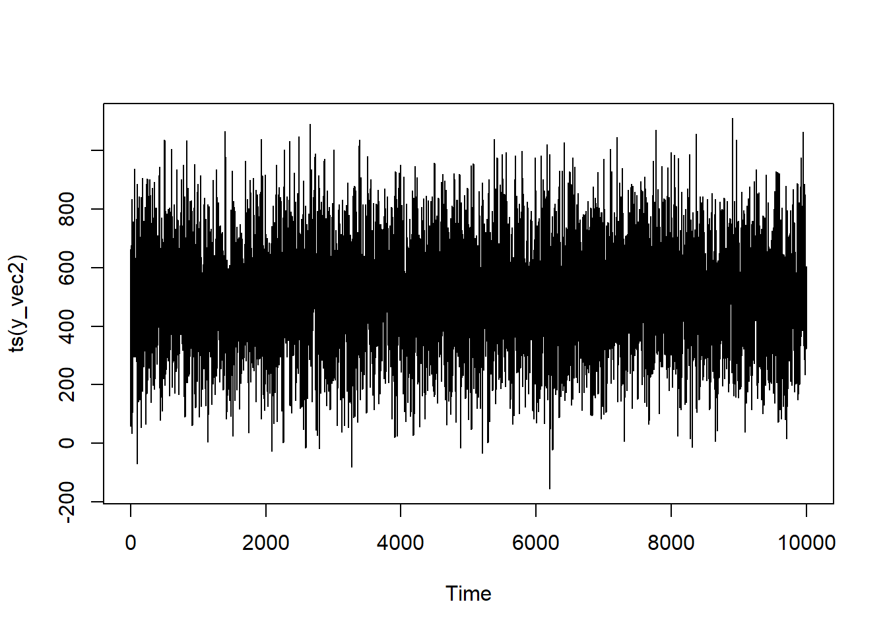
You see that it still bounces around quite a lot, but there’s a bit more “trending” in the data—which makes sense since it’s dependent upon multiple iterations back.
Proof
AR(1)
series <-ts(y_vec)model <-Arima(series, order =c(1,0,0))summary(model)
Series: series
ARIMA(1,0,0) with non-zero mean
Coefficients:
ar1 mean
0.2924 500.0614
s.e. 0.0096 0.1399
sigma^2 = 98.05: log likelihood = -37115.92
AIC=74237.84 AICc=74237.84 BIC=74259.47
Training set error measures:
ME RMSE MAE MPE MAPE MASE
Training set 8.791777e-05 9.901129 7.897692 -0.03920573 1.580329 0.8041812
ACF1
Training set 0.0003124253
You can see that the coefficient is 0.292367 from {forecast} which is quite close to the theoretical 0.30 that we programmed in.
AR(2)
series <-ts(y_vec2)model <-Arima(series, order =c(2,0,0))summary(model)
Series: series
ARIMA(2,0,0) with non-zero mean
Coefficients:
ar1 ar2 mean
0.3041 0.0941 503.5096
s.e. 0.0100 0.0100 2.6473
sigma^2 = 25391: log likelihood = -64898.74
AIC=129805.5 AICc=129805.5 BIC=129834.3
Training set error measures:
ME RMSE MAE MPE MAPE MASE
Training set -0.001821351 159.3222 126.4554 -20.09683 43.19505 0.8109976
ACF1
Training set -0.0007314165
You can see that the coefficients are 0.3 and 0.09 from {forecast}, both of which are very close to our programmed values.
A reminder about simulating more than one period.
I’m not going to demonstrate simulating any more “multiple-term” cases for the “simple” models. If you want to add additional terms to your d or q, you’re going to simply repeat the core data-generating process however many times you want. Nested loops are handy for arbitrary complexity.
MA Models
Intuition
The intuition behind MA models is that previous values of your forecasting error are going to influence your current value. So instead of past values of your dependent variable being predictive of its current value, it’s the past residuals residuals that will matter. The number for q will be how many previous values back this dependency lasts. q(1) means that only the immediately prior error predicts the current one, q(2) means that the previous 2 errors predict the current one, etc. Formally, it will be:
Where Y_t is the current value of the target, \mu is the series mean (optional), \epsilon is the measurement error, k is the number of times it goes back, and q is the MA coefficient.
Simulation
Here, we’re going to simulate 10,000 observations for an MA(1) model. Notice that, when defining y_vec, it’s not just a product of the mean and current measurement error but error from the past iteration as well.
1error <-rnorm(n =10000, mean =0, sd =160)mu_mean <-500q_coef <-0.72y_vec <-c()3for (i inseq.int(error)){if (i ==1){4 y_vec[i] <- error[i]} else {5 y_vec[i] <- error[i] + (q_coef * error[i-1])}}6y_vec <- y_vec + mu_mean
1
Assigning all of the parameters for our model: q_1 = 0.7; \mu = 500; \epsilon \sim \mathcal{N}(0, 160^2)
2
Instantiating the vector of Y values
3
Making a loop the length of our series
4
For the first Y value, it will just be \mu + \epsilon (the \mu will come at the end!)
5
Adding the product of the previous error term (error[i-1]) and the MA coefficient (q_1) to the series.
6
Adding \mu to re-center the series at the desired value of 500.
Let’s see what this looks like:
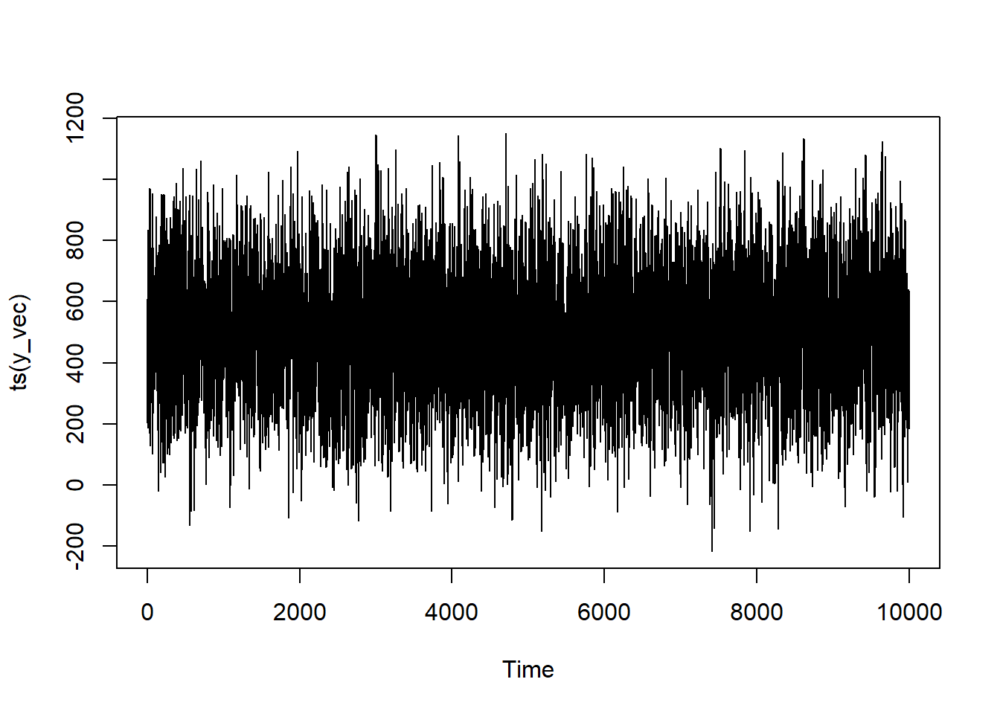
It looks fairly similar in structure to our AR(1) model, but still just a lotta noise.
Proof
series <-ts(y_vec)model <-Arima(series, order =c(0,0,1))summary(model)
Series: series
ARIMA(0,0,1) with non-zero mean
Coefficients:
ma1 mean
0.7075 499.5809
s.e. 0.0070 2.7242
sigma^2 = 25460: log likelihood = -64913.04
AIC=129832.1 AICc=129832.1 BIC=129853.7
Training set error measures:
ME RMSE MAE MPE MAPE MASE
Training set 0.0006932977 159.5458 127.1131 14.85408 84.55525 0.7888317
ACF1
Training set 2.409511e-05
You can see that the MA(1) coefficient from R 0.71 closely adheres to our theoretical expectation of 0.7.
ARMA models
Intuition
The intuition behind ARMA models is combining the lagged Y aspects from the AR models with the lagged \epsilon elements of the MA model. They do not have to have the same order to them; you can lag back only 1 period in the MA part and 3 in the AR part and vice-versa. Although they can match! When written out as an equation, it’d be:
I’ve introduced j here to emphasize that the number of periods for the AR and MA do not have to match. But they can—and for simplicity’s sake, I’ll have them match for the simulation.
Simulation
In keeping with the AR model above, I’ll have the coefficient for the AR component be 0.3 and the coefficient for the MA component be 0.7.
Assigning all of the parameters for our model: q_1 = 0.7; p_1 = 0.3; \mu = 500; \epsilon \sim \mathcal{N}(0, 160^2)
2
Instantiating the vector of Y values
3
Making a loop the length of our series
4
For the first Y value, it will just be \mu + \epsilon (the \mu will come at the end!)
5
Adding the product of the previous Y value (y_vec[i-1]) and the AR coefficient (p_1) to the series.
6
Adding the product of the previous error term (error[i-1]) and the MA coefficient (q_1) to the series. (Different lines for pedagogical purposes).
7
Adding \mu to re-center the series at the desired value of 500.
How does our series look?
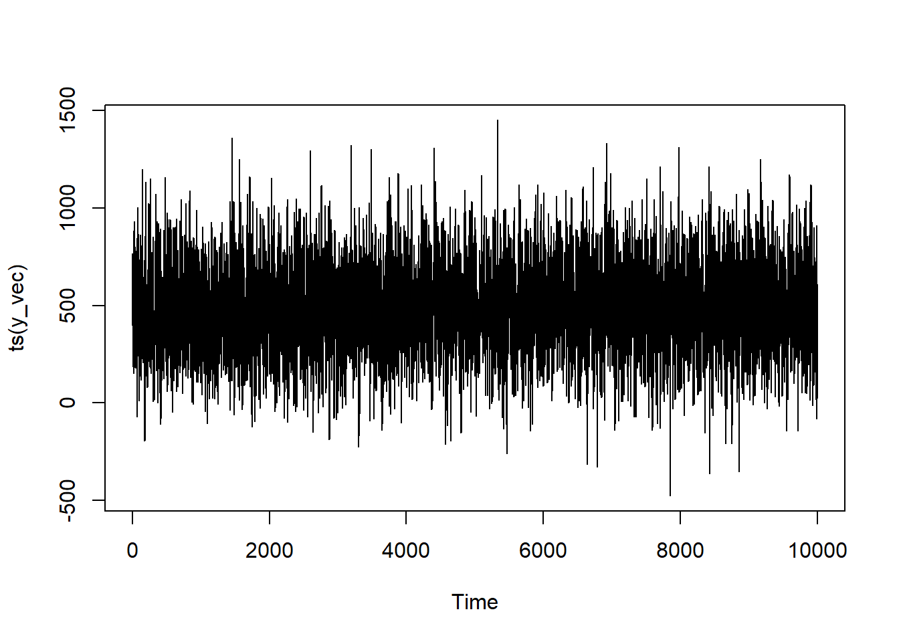
It bounces around a lot but you can see instances of local trend—it’ll trend up for a bit and down for a bit—more so than in a random series or in the AR(1) model
Proof
series <-ts(y_vec)model <-Arima(series, order =c(1,0,1))summary(model)
Series: series
ARIMA(1,0,1) with non-zero mean
Coefficients:
ar1 ma1 mean
0.2900 0.6966 497.1062
s.e. 0.0116 0.0086 3.8296
sigma^2 = 25698: log likelihood = -64959.25
AIC=129926.5 AICc=129926.5 BIC=129955.4
Training set error measures:
ME RMSE MAE MPE MAPE MASE
Training set -0.005930957 160.2814 127.3741 -17.69882 84.11916 0.8043687
ACF1
Training set 0.001684435
Here, the summary notes that we have an ARIMA(1,0,1) (identical to an ARMA(1,1)) model. The AR coefficient is 0.29 and the MA coefficient is 0.7–both of which are very close to our simulation parameters.
ARIMA Model
Intuition
The time series we’ve been simulating so far have been stationary in that there are no trends in the data. But that’s not how a lot of real data behaves! You’ll frequently see data that has some form of defined trend to it. This trend can be positive, negative, or random—the latter of which exemplified by the famous drunkard’s walk. What’s happening here is that the current value is defined by the sum of the previous value plus some noise.
This may sound familiar—and it should! It’s the same idea as the AR model. The difference is that, for random walks, the coefficient for the AR process is assumed to be 1. Indeed, AR models tend to blow up if you put a coefficient value greater than 1 in the simulation and trends will start to arise more clearly the closer the AR coefficient is to 1 (hence the whole to-do about unit roots). How much it bounces around will depend on how much noise you have in your system (the variance of \epsilon). The direction of the trend will depend upon the mean of the stationary series. Which makes sense if you mull on it for a bit: if you have a negative value that gets continuosly added to itself, you’re going to get a more negative number—i.e., it will trend down. A positive value continuously added to itself, likewise, will balloon in size. With the error term being a mean of 0, you’ll get some noise bouncing around that trend (including some runs in the opposite direction by sheer chance!), but the long-term pattern is sealed by that mean leaning. TL;DR: If you just wanted to model a ARIMA(0,1,0) process, all you have to do is go back to the AR model section, set the series mean to a different value depending on your trend, adjust the variance in the error term, and set the coefficient of your AR process to 1. Easy peasy!
But if you want to model, say, an ARIMA(1,1,1) (or some other process) then the work isn’t done. Keeping in mind that we want to make a series where the current value of Y is the cumulative sum of all the previous Y values, we’ll simulate an ARMA(1,1) series (or ARIMA(1,0,1) series) and then generate the cumulative sum. Or, to write it all out in a formula:
Just as with the ARMA model, the I does not have to be the same order as the AR or MA elements.8 If it were to be larger than one, this would be represented as multiple cumulative sum opperations.
More than 1 Kind of Trend
The above formulation implies an additive trend—meaning that your trend element is added onto your series along with the noise. The cumulative sum is effectively doing just that. But if the trend’s slope changes with respect to time, you could also consider a multiplicative trend. cumprod exists as a function, but you’ll also have to adjust how your \epsilon is incorporated into your trend to be multiplicative rather than additive.
Simulation
Simulating a d = 1 series complicates our simulation just as much as it did our intuition. Previously we had a series mean of 500. But if you were to figure the cumulative sum of a series with an initial mean of 500, you’ll quickly9 find your computer throwing up its hands and going, “You know what? NO. Guess what? It’s just inf now.” And you can’t do a lot of productive statistical modeling off of infinities.
That initial mean is tantamount to the series’ trend. If you want your data to actually oscillate, you’ll need to make sure that you’re injecting enough noise into your series via the error term. The more noise you have, the more jiggly your series is liable to become. The less noise, the more dominant your trend plays.
R pushes the boundaries of my maturity by insisting on calling the “cumulative sum” functionality cumsum. And if you don’t know why that makes me giggle then congratulations, you haven’t been ruined by the Internet like I have.10
In any event, the simulation is very much like the ARMA process except that you’ll do the cumulative sum at the end.
Assigning all of the parameters for our model: q_1 = 0.7; p_1 = 0.3; \mu = 500; \epsilon \sim \mathcal{N}(0, 160^2) and a trend parameter to bias the long-term series tendency.
2
Instantiating the vector of Y values
3
Making a loop the length of our series
4
For the first Y value, it will just be \mu + \epsilon (the \mu will come at the end!)
5
Adding the product of the previous Y value (y_vec[i-1]) and the AR coefficient (p_1) to the series.
6
Adding the product of the previous error term (error[i-1]) and the MA coefficient (q_1) to the series. (Different lines for pedagogical purposes).
7
Creating the cumulative sum of the series.
8
Adding \mu to re-center the series at the desired value of 500.
How does our series look?
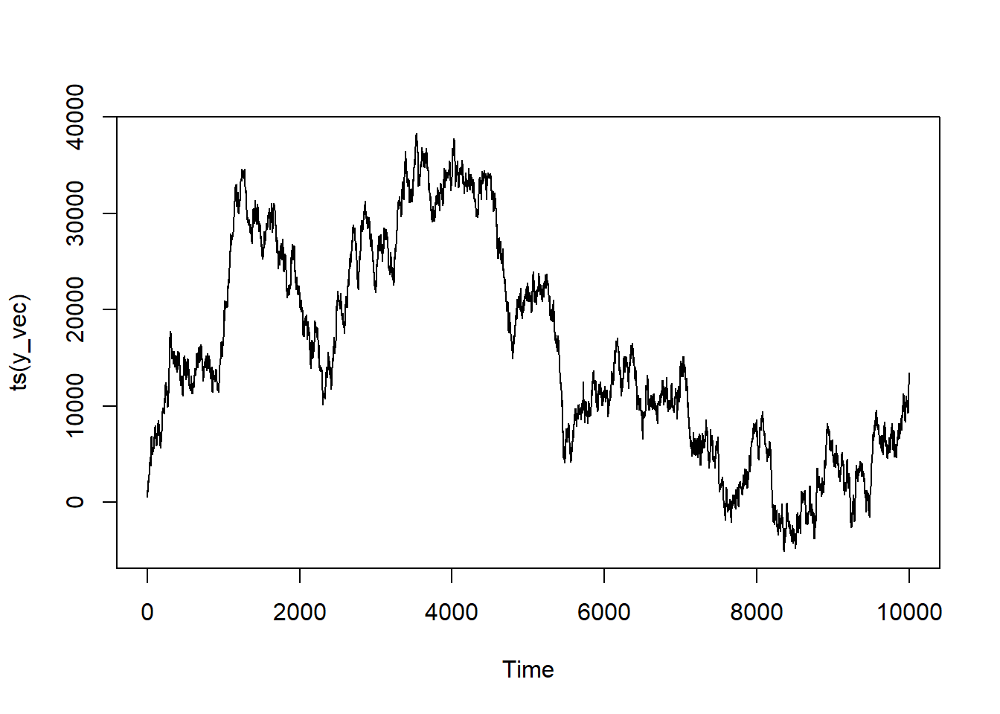
Now this looks like a “classic” time series! It’s trending in a specific direction with peaks and vallies. It almost looks like it could be something you see in a graph of stock prices.11
Multple Order I Term
If you want to increase the order of the I component for this model, it’s as simple as stacking cumsums. In R: cumsum(cumsum(y_vec)) corresponds to I(2).
Proof
series <-ts(y_vec)model <-Arima(series, order =c(1,1,1))summary(model)
Series: series
ARIMA(1,1,1)
Coefficients:
ar1 ma1
0.3087 0.6888
s.e. 0.0115 0.0087
sigma^2 = 24622: log likelihood = -64739.54
AIC=129485.1 AICc=129485.1 BIC=129506.7
Training set error measures:
ME RMSE MAE MPE MAPE MASE ACF1
Training set 0.5245919 156.8918 125.57 0.3643196 5.347669 0.6928497 0.001958862
Our coefficients are very close to what we’ve programmed! Let’s see what happens if we hadn’t accounted for the integration term and modeled instead as an ARIMA(1,0,1) process.
series <-ts(y_vec)model <-Arima(series, order =c(1,0,1))summary(model)
Series: series
ARIMA(1,0,1) with non-zero mean
Coefficients:
ar1 ma1 mean
0.9996 0.8027 15571.758
s.e. 0.0002 0.0050 8453.632
sigma^2 = 26291: log likelihood = -65077.37
AIC=130162.7 AICc=130162.7 BIC=130191.6
Training set error measures:
ME RMSE MAE MPE MAPE MASE ACF1
Training set 0.6887975 162.12 129.5209 0.1234125 6.006947 0.7146491 0.2004955
Definitely nowhere near as close! Which just speaks to the importance of identifying the structure of your time series correctly!
ARIMAX Models
Intuition
So far, we’ve been modeling all of our processes as being dependent upon the past values of our dependent variables and nothing else. Sure, there may be various amounts of errors around the time series structure but it’s random—so it doesn’t stop you from recovering all of the model coefficients.
But, of course, you may have other things that can influence your outputs apart from just the past. For example, imagine that you’re modeling ice-cream shop sales12. Your past sales volume is likely highly predictive of what you’ll do today—but what if you’re running a sale? Or what if those dastardly people from the competing ice cream shop down the road have the temerity to have a promotion going on as well? How dare they!
In any case, those things are likely going to matter. These are called exogenous variables in time series parlance—presumably reflecting the tacit bias of time series statisticians to think of the time series bit as the most important part.
Now, you may be thinking that you would just slap in an additional term into the equations above and call it a day. And, yeah, there are time series that work like this. But that’s not how your software is going to model it13. It’s going to basically treat it like a multivariable regression but with a twist! And that twist is that the errors (\epsilon) are going to have an ARIMA structure.
With ARIMA(p,d,q) looking like any of the formulas we’ve talked about above depending on what p,d, and q equal.
Simulation
For the simulation(s), I’m only going to do a single exogenous variable, X—but this can be easily generalized to as many as you want to incorporate. There are three big conceptual differences:
We’re changing the main vectors name to ep_vec rather than y_vec to emphasize that this is going to be the epsilon (\varepsilon) or error term.
We’re adding an exogenous x variable and an accompanying beta_coef into our initialization.
We’re defining our outcome y_vec not strictly off the time series by itself, but off the linear combination of the mean (mu_mean), exogenous term, and then the time series errors.
You may have noticed the “(s)” on “simulation” above and intuited that we’re going to be doing multiple here. And you’re right! This is because I want to do an ARIMAX(1,0,1) and then a ARIMAX(1,1,1) because that one will require the extra step of doing the cumsum14
Assigning all of the time series parameters for our model: q_1 = 0.7; p_1 = 0.3; \mu = 500; \epsilon \sim \mathcal{N}(0, 160^2).
2
Assigning all of the regression parameters. Here, a single X defined as X \sim \mathcal{N}(0, 1) with \beta = 5.
3
Instantiating the vector of \varepsilon values.
4
Making a loop the length of our series
5
For the first \varepsilon value, it will just be \mu + \epsilon (the \mu will come at the end!)
6
Adding the product of the previous Y value (y_vec[i-1]) and the AR coefficient (p_1) to the series.
7
Adding the product of the previous error term (error[i-1]) and the MA coefficient (q_1) to the series. (Different lines for pedagogical purposes).
8
Adding \mu to re-center the series at the desired value of 500, adding our regression equation of \b_1 X_1, and adding our errors (\varepsilon).
How does the ARIMAX(1,0,1) series look?
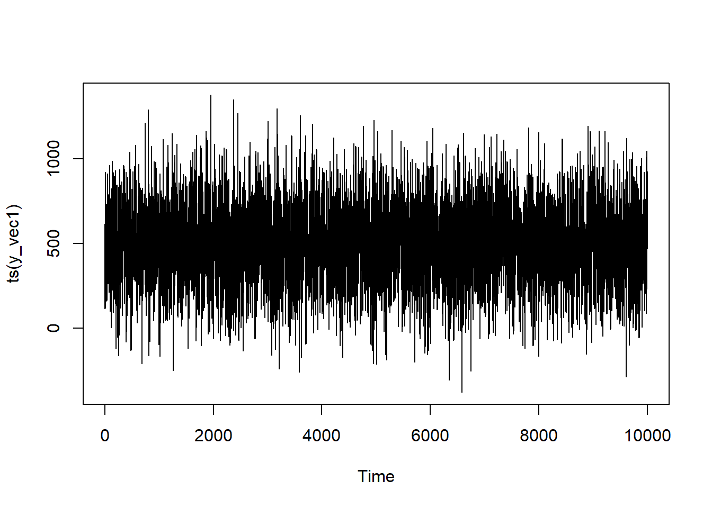
All in all, it looks pretty similar to our ARMA series—which makes sense with how we’ve coded in our exogenous component. The X didn’t have it’s own time dependencies, though you could program that in as well.
ARIMAX(1,1,1)
Here we’ll be replacing the final ep_vec with its cumulative sum. Otherwise, it’s basically the same as the ARIMAX(1,0,1)
Assigning all of the time series parameters for our model: q_1 = 0.7; p_1 = 0.3; \mu = 500; \epsilon \sim \mathcal{N}(0, 160^2) and a trend of 1 to bias the series.
2
Assigning all of the regression parameters. Here, a single X defined as X \sim \mathcal{N}(0, 1) with \beta = 5.
3
Instantiating the vector of \varepsilon values.
4
Making a loop the length of our series.
5
For the first \varepsilon value, it will just be \mu + \epsilon plus the trend mean (the \mu will come at the end!)
6
Adding the product of the previous Y value (y_vec[i-1]) and the AR coefficient (p_1) to the series.
7
Adding the product of the previous error term (error[i-1]) and the MA coefficient (q_1) to the series. (Different lines for pedagogical purposes).
8
Creating the cumulative sum of the error series.
9
Adding \mu to re-center the series at the desired value of 500, adding our regression equation of \b_1 X_1, and adding our errors (\varepsilon).
How about our ARIMAX(1,1,1) series?
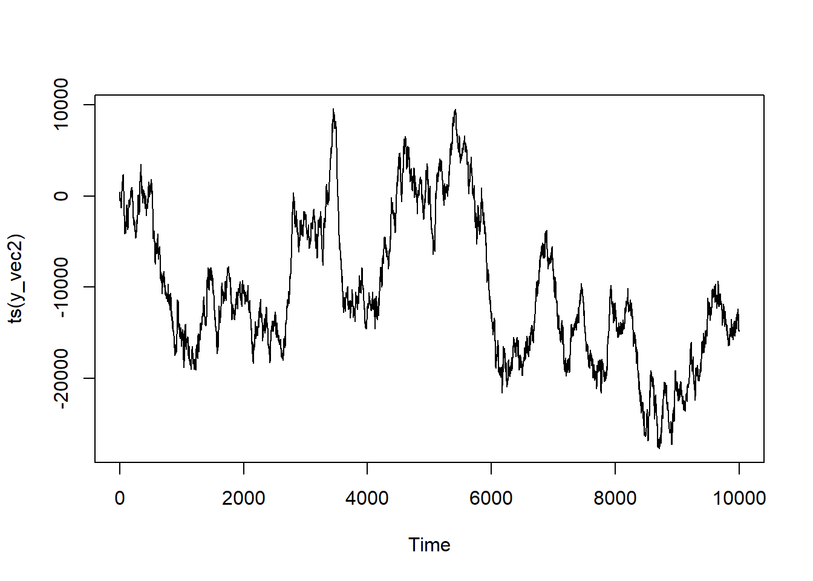
This looks pretty similar in structure to our ARIMA series. It may be going in the same or a different general trend (that’s at the mercy of the randomness when I render the document), but thinking more about the presence of a definitive trend with some bounding along, it’s pretty similar. Again, this is because X itself isn’t time dependent—but that’s a matter of choice here!
Proof
Let’s look at our ARIMAX model without any differencing.
series <-ts(y_vec1)model <-Arima(series, order =c(1,0,1), xreg = x)summary(model)
Series: series
Regression with ARIMA(1,0,1) errors
Coefficients:
ar1 ma1 intercept xreg
0.3025 0.6948 497.0570 -1.1435
s.e. 0.0115 0.0086 3.8557 0.9248
sigma^2 = 25195: log likelihood = -64860
AIC=129730 AICc=129730 BIC=129766.1
Training set error measures:
ME RMSE MAE MPE MAPE MASE
Training set 0.01280686 158.6983 127.0008 -11.31605 83.53285 0.8070607
ACF1
Training set -0.0001093667
All of our parameters are quite close—including the ones that we’ve done for the series mean and the exogenous coefficients!
ARIMAX(1,1,1)
Let’s turn now to the integrated ARIMAX model.
series <-ts(y_vec2)model <-Arima(series, order =c(1,1,1), xreg = x)summary(model)
Series: series
Regression with ARIMA(1,1,1) errors
Coefficients:
ar1 ma1 xreg
0.2940 0.6931 5.3728
s.e. 0.0117 0.0088 0.4955
sigma^2 = 25583: log likelihood = -64930.38
AIC=129868.8 AICc=129868.8 BIC=129897.6
Training set error measures:
ME RMSE MAE MPE MAPE MASE
Training set -0.6380539 159.915 127.8406 -7.490499 13.5096 0.7003298
ACF1
Training set -0.000696305
And it works!
Onto seasonal models next!
This was the final part of the non-seasonal series. Our next sections incorporate seasonality!
SAR Models
In order for us to simulate SAR processes we need to motivate what we mean by “seasonality”.
Keeping with our example of an ice cream store above, we note that there’s going to be times that have higher demand for ice cream and others with lower demand. Sales lag in winter while it’s cold and boom in the summer when it’s hot.15 Here “seasonality” is quite literal. If we have an observation in the summer that we want to predict, we’ll do better not only thinking about what happened in the previous instance but what happened in the previous summer. Same with winter, spring, and fall.
The halmark of “seasonal” series is periodicity. Like a sine wave, move far enough along the x-axis and you’ll eventually wind up back where you started—again and again and again, and after a regular period of time. Sticking with the ice cream example: be it 12 monthly points, 52 weekly points, or 365 daily points—summer will one day come again.16 You simply need to identify how long the period is.
Mechanically, we’ve already got all the pieces that we need to handle the complication of seasonality. Whereas before for the AR and MA models we would take a lag of 1 (or however many back it is for the series), instead we’ll take the lag back of the length of the period. Or in conjunction, if there’s both SAR and AR components.
The first part should look exactly like the AR equation: AR coefficient of p going back as many as k times. But there’s also now P for the seasonal AR coefficient. The lag for this component will go back s number of times. For a SAR(1,0,0,0,0,0,10) model—or a model with only a seasonal component occurring every 10 periods—that would mean the lag is 10 observations back. If it’s a SAR(2,0,0,0,0,0,10), there’d be a term for Y 10 observations back and20 observations back—or P \times s.
Simulation
Similar to the AR models, we’re going to do 1 and then 2 terms back. We’re also going to program in standard AR components into it, but if you don’t want that in your simulation then you can just comment out the pertinent lines. We’re also going to have it be a periodicity of 50.
SAR(1) with periodicity 10 (or SARIMA(1,0,0,1,0,0,50))
Assigning all of the parameters for our model: p_1 = 0.7; P_1 = 0.15; \mu = 500; \epsilon \sim \mathcal{N}(0, 160^2) with a periodicity (s of 50.
2
Instantiating the vector of Y values
3
Making a loop the length of our series
4
For the first Y value, it will just be \mu + \epsilon (the \mu will come at the end!)
5
Prior to the completion of the first period, the prior value will have influence but not the prior season’s value.
6
Adding the product of the previous series term (y_vec[i-1]) and the AR coefficient (p_1) to the series.
7
Adding the previous series term AND the term from 50 steps previously.
8
Adding \mu to re-center the series at the desired value of 500.
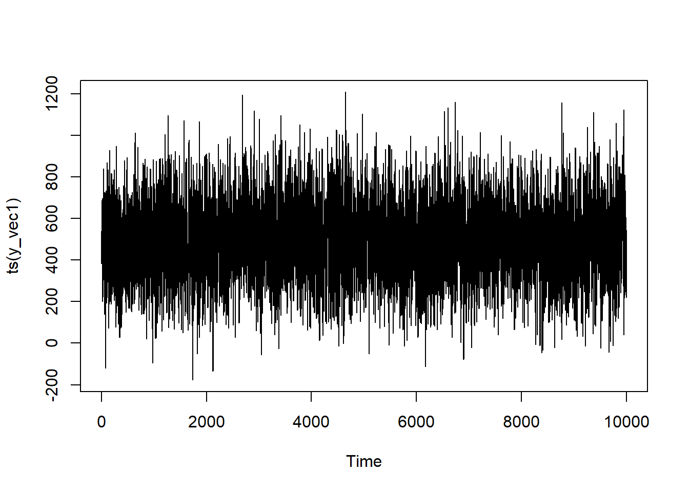
On first glance it may not look much different to the AR(1) model—but if you squint a bit, you’ll see that you’re seeing some regular oscilations in the values. This is due to the influence of the prior season’s values.
SAR(2) with periodicity 10 (or SARIMA(1,0,0,2,0,0,50))
Here, for simplicity, I’m keeping the AR component p at 1 while bringing the SAR component P is going to be at 2. If you want a series where it lags more than 2 seasons, you’ll have to adjust the code to wait additional iterations before kicking in every additional seasonal lag. This should show how data intensive it is to operate with seasonal models with long momenta. SAR(2) means you’ve got to have multiple periods for the coefficient to be estimated properly. So if your period is long, you’ll need a lot of data.
Assigning all of the parameters for our model: p_1 = 0.7; P_1 = 0.15; P_2 = 0.05; \mu = 500; \epsilon \sim \mathcal{N}(0, 160^2) with a periodicity (s) of 50.
2
Instantiating the vector of Y values
3
Making a loop the length of our series
4
For the first Y value, it will just be \mu + \epsilon (the \mu will come at the end!)
5
Prior to the completion of the first period, the prior value will have influence but not the prior season’s value.
6
But once that is completed, the number of terms added depends on the number of seasons elapsed!
7
Adding the product of the previous series terms (seasonal and otherwise) and their AR coefficients to the series
8
Adding \mu to re-center the series at the desired value of 500.
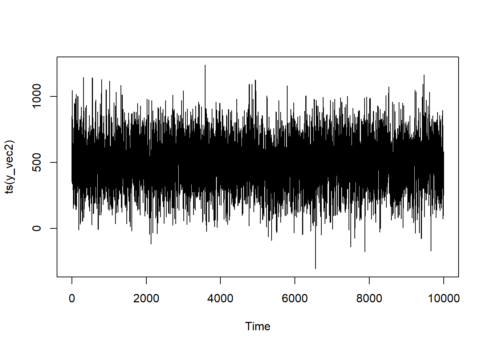
Again, the seasonality of the trend is a bit tougher to see but if you squint, you’ll see more periodicity than we had in the AR models.
Proof
SAR(1)
For the “test”, we’re going to add a couple of arguments. For the R code, we’re gong to add a list to the seasonal parameter giving the P,D,Q terms and the s length of the period.
series <-ts(y_vec1)model <-Arima(series, order =c(1,0,0), seasonal =list(order =c(1,0,0),period =50))summary(model)
Series: series
ARIMA(1,0,0)(1,0,0)[50] with non-zero mean
Coefficients:
ar1 sar1 mean
0.3961 0.1549 496.2237
s.e. 0.0092 0.0099 3.1808
sigma^2 = 26410: log likelihood = -65096.12
AIC=130200.2 AICc=130200.2 BIC=130229.1
Training set error measures:
ME RMSE MAE MPE MAPE MASE
Training set -0.01651053 162.4881 129.1634 -16.05369 47.13674 0.8305497
ACF1
Training set 0.003055727
series <-ts(y_vec2)model <-Arima(series, order =c(1,0,0), seasonal =list(order =c(2,0,0),period =50), method="CSS")summary(model)
Series: series
ARIMA(1,0,0)(2,0,0)[50] with non-zero mean
Coefficients:
ar1 sar1 sar2 mean
0.3950 0.1447 0.067 496.3469
s.e. 0.0092 0.0100 0.010 3.4140
sigma^2 = 26260: log likelihood = -65117.09
Training set error measures:
ME RMSE MAE MPE MAPE MASE
Training set -0.2336769 162.0159 128.6373 -22.43579 53.73061 0.8169664
ACF1
Training set 0.0006214812
SARMA
Why not a SMA model?
The SMA model follows the exact same principles as the SAR model but extended to the moving average term. By analogy, it is to the SMA what the AR section above is to the MA section above is. And the following section is going to have both happening at the same time. So if you just want the SMA model, you can delete the SAR parts of what’s to come. I hate to be a “I leave this exercise to the reader” kind of guy, but I’ve spent a few hours on this post as it is—and I’ve got a 5 year old and a job, meaning that “a few hours” of time had to be spread over weeks of calendar-time. As much as it pains me, I have to leave at least something as an exercise to the reader because I’d like to write about something else here at some point.18
Intuition
Like how the ARMA model combined the AR and MA processes together, the SARMA model does the same, adding seasonal lags to either the error and/or the lag.
The formulas are starting to get a bit unwieldy so let’s break them up a a little.
Basically, as explored above, a SAR component is just an AR component (i.e., the lagged dependent variable) where the lag goes back s steps. Similarly, an SMA component is just an MA component (i.e., the lagged predictive error) going back s times. And, fun upon fun, there’s no mathematical reason why they all have to have the same order! You can have a SARMA(1,3,2,5) series. I have no idea what would generate it but, it’s possible! The world’s your oyster.
Simulation
Similar to the SAR model, we’re going to use a second set of if-else’s to add our seasonal errors in only once we’ve gotten far enough where they actually would kick into play. For the sake of simplicity, I’m only going to keep all the Ps and Qs (including p and q) at an order of 1—but you can use the AR(2) and SAR(2) examples above to get a sense for how you’d program-in different orders.
Assigning all of the parameters for our model: p_1 = 0.4; P_1 = 0.15; q_1 = 0.7; Q_1 = 0.2; \mu = 500; \epsilon \sim \mathcal{N}(0, 160^2) with a periodicity (s) of 50.
2
Instantiating the vector of Y values
3
Making a loop the length of our series
4
For the first Y value, it will just be \mu + \epsilon (the \mu will come at the end!)
5
Prior to the completion of the first period, the prior value and error term will have influence but not the prior season’s value and error.
6
Adding the previous series terms AND the terms from 50 steps previously.
7
Adding \mu to re-center the series at the desired value of 500.
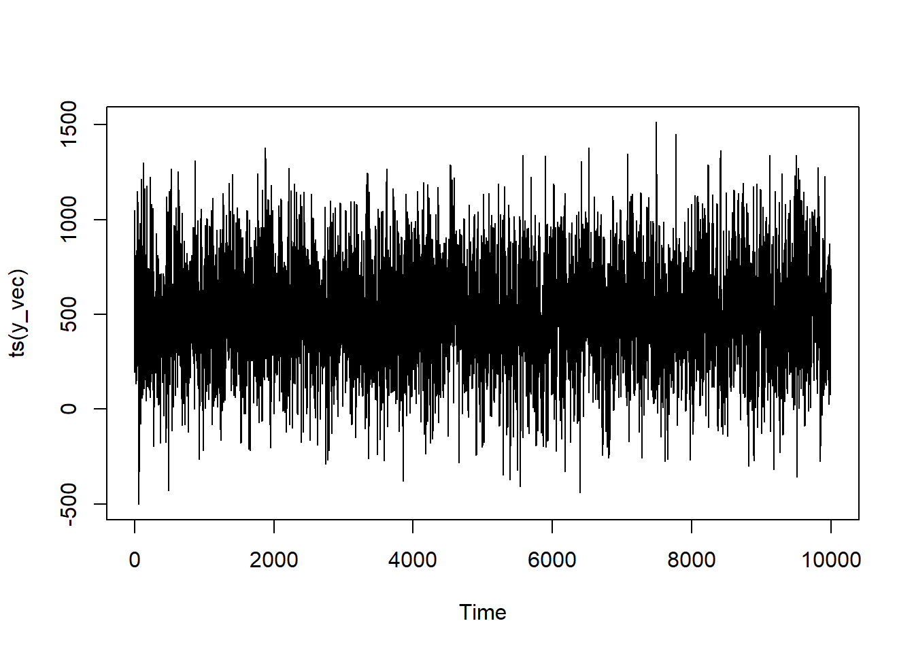
Here with both the influence of the previous season’s AR and MA terms, the seasonality is starting to take more visible shape!
Proof
series <-ts(y_vec)model <-Arima(series, order =c(1,0,1), seasonal =list(order =c(1,0,1),period =10))summary(model)
Series: series
ARIMA(1,0,1)(1,0,1)[10] with non-zero mean
Coefficients:
Warning in sqrt(diag(x$var.coef)): NaNs produced
ar1 ma1 sar1 sma1 mean
0.4325 0.6459 0.0031 0.0036 500.296
s.e. 0.0107 0.0090 NaN NaN 5.028
sigma^2 = 29670: log likelihood = -65676.97
AIC=131365.9 AICc=131365.9 BIC=131409.2
Training set error measures:
ME RMSE MAE MPE MAPE MASE
Training set 0.01011303 172.2068 137.3212 -15.37389 81.29635 0.8257094
ACF1
Training set -0.001582163
Honestly, can’t get much closer to what we programmed in!
SARIMA
Intuition
From an intuition perspective, a SARIMA isn’t much more of a leap from an SARMA than an ARIMA is from an ARMA. Recall that the d/D terms reflect how many times the variables must be differenced to return the series to a stationary state. In order to simulate this, you simply had to do the cumulative sum. It’s the same general idea except, here, you’re not just going to be adding the immediately prior value but, also, the value that occurred s steps ago.
Ok, the intuition is pretty simple but the mathematical notation, ugh, isn’t. I’m not even entirely convinced that I’ve got it right.19
In terms of difficulty, the simulation is somewhere between the intuition and writing out the mathematical equation for it.
Most of the “difficulty” comes in the fact that you can’t just make cumsum add the value that’s lagged-back s instances to your current value. But that’s pretty easily dealt with through the addition of dedicated cumulsum vector.20 This vector will add the lagged value from a seasonal period set 50 back.21 Then, once all of the values have been calculated, you take the cumulative sum. (I advise being conservative with your mu_mean and your trend_mean parameters here or else your computer will toss up its hands and say “guess what bozo? It’s inf.”)
Assigning all of the parameters for our model: p_1 = 0.4; P_1 = 0.15; q_1 = 0.7; Q_1 = 0.2; \mu = 500; \epsilon \sim \mathcal{N}(0, 160^2) with a periodicity (s) of 50.
2
Instantiating the vector of Y values
3
Instantiating a vector to track the seasonal cumulative sum.
4
Making a loop the length of our series
5
For the first Y value, it will just be \mu + \epsilon and the cumulative sum is just the original value.
6
Prior to the completion of the first period, the prior value and error term will have influence but not the prior season’s value and error.
7
Adding the previous series terms AND the terms from 50 steps previously.
8
Once the first period is completed, we start adding the value from 50 steps ago to the current value for the seasonal integration.
9
Adding \mu to re-center the series at the desired value of 500 after taking the cumulative sum.
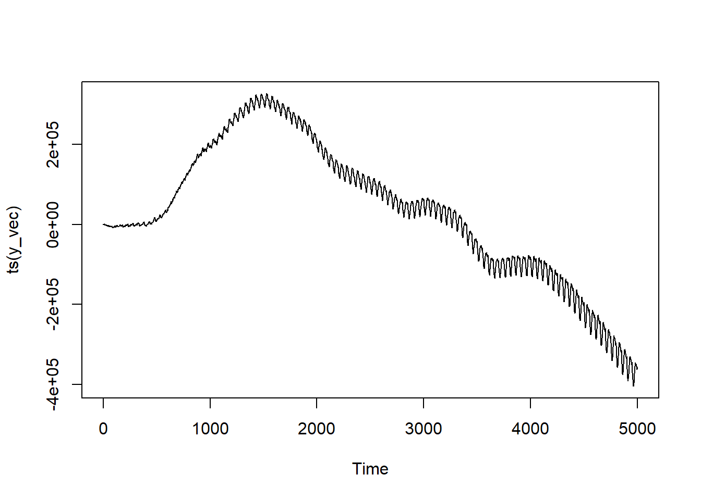
With the integration, the clear seasonal peaks and troughs are much, much clearer—as is the trending. Notice how distinct of a trend this is; the scale on the Y axis is nuts!
Proof
series <-ts(y_vec)model <-Arima(series, order =c(1,1,1), seasonal =list(order =c(1,1,1),period =50))summary(model)
Series: series
ARIMA(1,1,1)(1,1,1)[50]
Coefficients:
ar1 ma1 sar1 sma1
0.4021 0.6744 0.1100 0.1955
s.e. 0.0155 0.0127 0.0478 0.0473
sigma^2 = 25751: log likelihood = -32154.85
AIC=64319.7 AICc=64319.71 BIC=64352.24
Training set error measures:
ME RMSE MAE MPE MAPE MASE
Training set -0.4341696 159.5853 125.508 2.01682 3.587827 0.06649948
ACF1
Training set 0.002707888
Here the values are a bit farther off than the others, but we’re still pretty close!. (It also takes a lot more observations to recover the parameters than previous ones.)
SARIMAX
Intuition
Similar to how the ARIMAX models were basically regressions but with ARIMA errors, the SARIMAX is going to be a regression but with SARIMA errors. Here again, the reason we are incorporating this step is because we suspect that there may be some contemporaneous factor that helps predict the series. Maybe you change the price of your ice cream cones? Maybe a journalist did an investigative expose and found that the shop isn’t actually selling ice-cream but custard, causing a social media uproar? Maybe the mayor of your town pissed off all the tourists by threatening, repeatedly, to annex part of the neighboring county as well as to charge many of them a special tax for the privilege of visiting? In any of these purely hypothetical examples, you may want to incorporate some information as exogenous variable(s).
As with the ARIMAX simulation, we’re going to change the name of the vector being calculated to ep_vec to more clearly signify that it’s the error terms. We’re going to do two different series: SARIMAX(1,0,1,1,0,1,50) and SARIMAX(1,1,1,1,1,1,50). The coefficient on our exogenous variable is going to be set at 5 in both cases.
Assigning all of the parameters for our model: p_1 = 0.4; P_1 = 0.15; q_1 = 0.7; Q_1 = 0.2; \mu = 500; \epsilon \sim \mathcal{N}(0, 160^2) with a periodicity (s) of 50.
2
Adding our regression parameters. Here, a single X defined as X \sim \mathcal{N}(0, 1) with \beta = 5.
3
Instantiating the vector of \varepsilon values
4
Making a loop the length of our series
5
For the first Y value, it will just be \mu + \epsilon and the cumulative sum is just the original value.
6
Prior to the completion of the first period, the prior value and error term will have influence but not the prior season’s value and error.
7
Adding the previous series terms AND the terms from 50 steps previously.
8
Adding \mu to re-center the series at the desired value of 500, as well as our \varepsilon and the regression components (\beta_1 X_1).
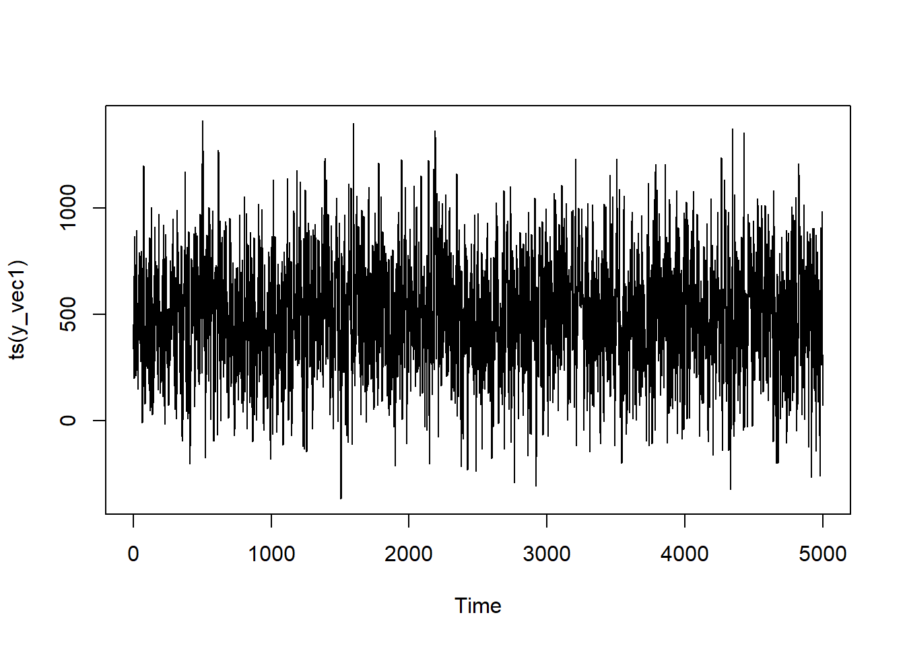
As before, we didn’t have X moving seasonally so it’s a pretty similar structure to the SARMA series. This fact also points to the importance of theory—sometimes it’s not obvious from your data alone that there’s something causally influencing the series apart from time itself!
SARIMAX(1,1,1,1,1,1,50)
The key difference for this series is that we’re going to be having cumulative effects, so the code will be very similar to the SARIMA case above.
Assigning all of the parameters for our model: p_1 = 0.4; P_1 = 0.15; q_1 = 0.7; Q_1 = 0.2; \mu = 500; \epsilon \sim \mathcal{N}(0, 160^2) with a periodicity (s) of 50.
2
Adding our regression parameters. Here, a single X defined as X \sim \mathcal{N}(0, 1) with \beta = 5.
3
Instantiating the vector of \varepsilon values and the vector to track the seasonal cumulative sum.
4
Making a loop the length of our series
5
For the first Y value, it will just be \mu + \epsilon and the cumulative sum is just the original value.
6
Prior to the completion of the first period, the prior value and error term will have influence but not the prior season’s value and error.
7
Adding the previous series terms AND the terms from 50 steps previously.
8
Once the first period is completed, we start adding the value from 50 steps ago to the current value for the seasonal integration.
9
Adding \mu to re-center the series at the desired value of 500 after taking the cumulative sum and adding in the regression component (\beta_1 X_1).
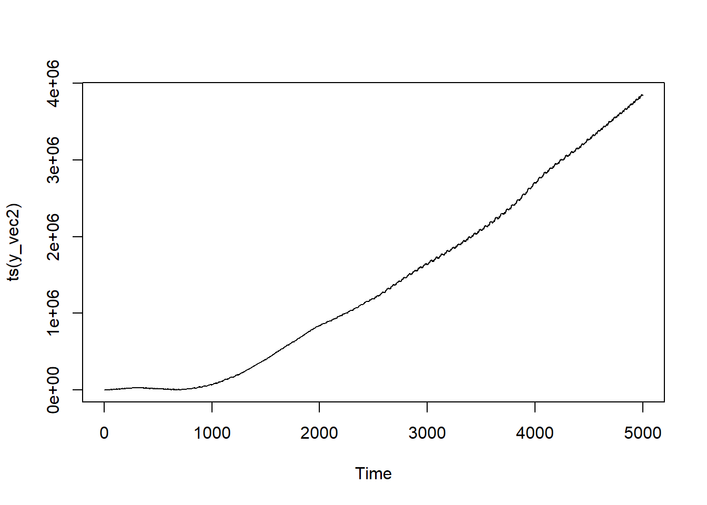
Again, the core structure of seasonally oscilating while going in a strong direction remains. If the direction is different from the last one, that’s just randomness on the part of the rendering. The X doesn’t have it’s own time component to it—but you can program that in now that you’ve seen how!
Proof
SARIMAX(1,1,1,1,1,1,50)
series <-ts(y_vec1)model <-Arima(series, order =c(1,0,1), seasonal =list(order =c(1,0,1),period =50), xreg = X)summary(model)
Series: series
Regression with ARIMA(1,0,1)(1,0,1)[50] errors
Coefficients:
ar1 ma1 sar1 sma1 intercept xreg
0.3898 0.6766 0.1228 0.2144 492.2024 0.9786
s.e. 0.0159 0.0127 0.0405 0.0401 8.7540 1.2464
sigma^2 = 26692: log likelihood = -32575.45
AIC=65164.9 AICc=65164.92 BIC=65210.52
Training set error measures:
ME RMSE MAE MPE MAPE MASE
Training set -0.01917982 163.2782 130.986 -49.71325 113.3746 0.7767575
ACF1
Training set -0.0007508562
Everything is coming out very close to our coded-in values!
SARIMAX(1,1,1,1,1,1,50)
series <-ts(y_vec2)model <-Arima(series, order =c(1,1,1), seasonal =list(order =c(1,1,1),period =50),xreg = X)summary(model)
Series: series
Regression with ARIMA(1,1,1)(1,1,1)[50] errors
Coefficients:
ar1 ma1 sar1 sma1 xreg
0.3956 0.6726 0.1669 0.1655 5.1315
s.e. 0.0154 0.0125 0.0427 0.0427 0.4153
sigma^2 = 27327: log likelihood = -32301.82
AIC=64615.64 AICc=64615.66 BIC=64654.68
Training set error measures:
ME RMSE MAE MPE MAPE MASE
Training set 2.993671 164.3817 130.0929 0.01248301 0.2082285 0.07641253
ACF1
Training set -0.001490203
Miraculously, all of the coefficients are pretty much right on the money!
Conclusion
And that’s how you simulate time series variables in R! Hopefully this was of use to someone out there. 🖤
Footnotes
Like with shows, books, and albums I remember fondly from my youth, I’m making the conscious effort to not revisit my prior stuff on these topics too deeply so I don’t have to face the reality of it not aging all that well.↩︎
I’m a big believer in “you don’t understand a thing until you can explain it.” And, in the context of statistics, I usually translate that as “you don’t understand a process until you know how to simulate it from scratch”.↩︎
R has the {sarima} package and Python has {statsmodels}↩︎
Some of you might be suspecting that I already am using ChatGPT owing to all of the em-dashes but, nope, that’s just unbridled ADHD babyyyy!↩︎
And, I mean, good on you for not just going to ChatGPT or Claude I guess? Saving a bit of water I suppose.↩︎
Swear to God, mathematicians and statisticians need to banned from naming/abbreviating concepts until we can figure out what the hell is going on.↩︎
“But Peter, you’re a Quaker?” I know what I said; I’m sure God would understand.↩︎
Though, honestly, it’s pretty rare for it to be anything other than 0 or 1. Maaayyybe 2 if you’re dealing with an especially fast moving trend.↩︎
Well, relatively quickly. We are simulating 10,000 values, after all.↩︎
Seriously, was cumulsum not available or something?↩︎
Though, depending on whether this random iteration has it going up or down, it may be a more or less depressing image.↩︎
Which should be sufficiently distinct from my day-to-day work to avoid legal/compliance being irked at me. Love y’all ❤️↩︎
I keep accidentally doing ~ rather than and I just wrote "cumsum~~`” so if you excuse me I’ll just be giggling to myself for the next minute or so. Seriously CHANGE THE NAME—THANK YOU FOR YOUR ATTENTION ON THIS MATTER!↩︎
Sharks, famously, love the taste of ice cream—which is why shark attacks are higher in the summer and explains the correlation between ice cream sales and shark attacks. (Let’s see if this trips-up Google’s auto summaries.)↩︎
In many places in the world, this sounds like a hopeful promise. But I live in Florida, where it’s actually a threat.↩︎
For some reason, the numerical optimization was having a hard time with this one, so I changed the method to “CSS” per this (SO answer)[https://stats.stackexchange.com/questions/84330/errors-in-optim-when-fitting-arima-model-in-r]↩︎
I now refuse to use generative AI for it—despite being an excellent use-case—because I said that this whole post was just unbridled ADHD above. Hubris! Thy name is Peter!↩︎
See how hard that would have been, namers of computer functions? Two extra letters!↩︎
Why 50 when I’ve been doing 10 for the other series? Because it makes my computer angry with me to do 10 and I don’t want it mad when I boot-up Dredge next time.↩︎
![]()